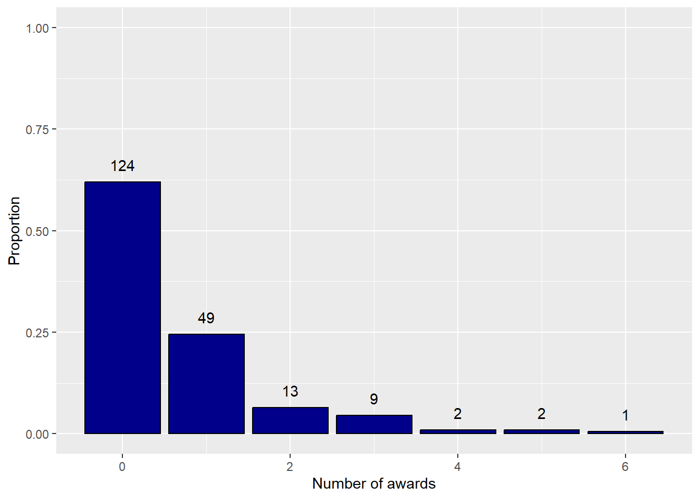
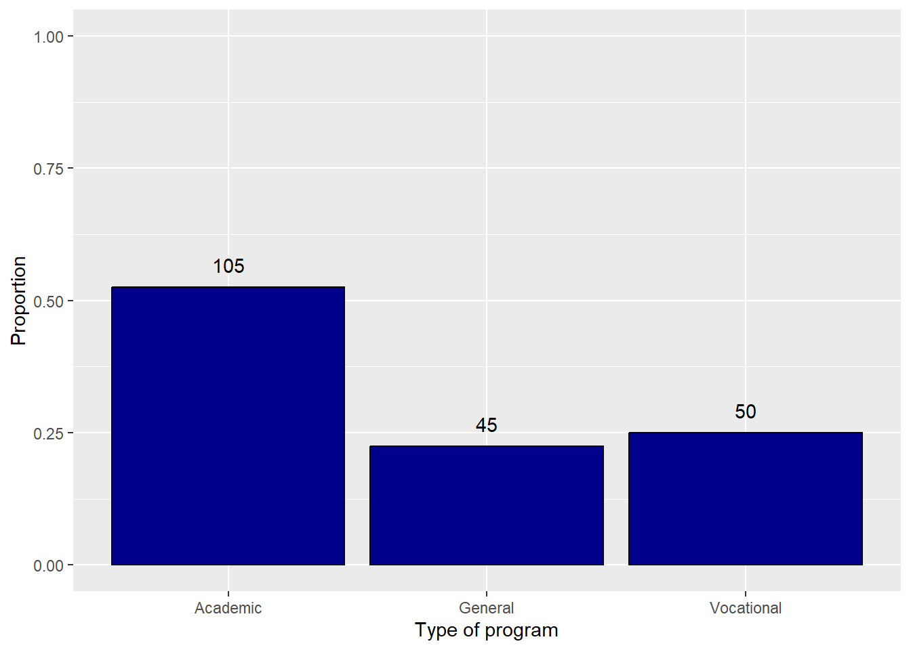
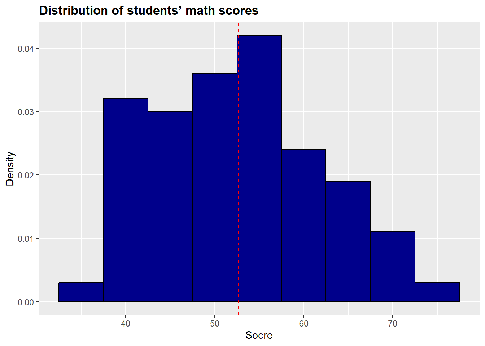
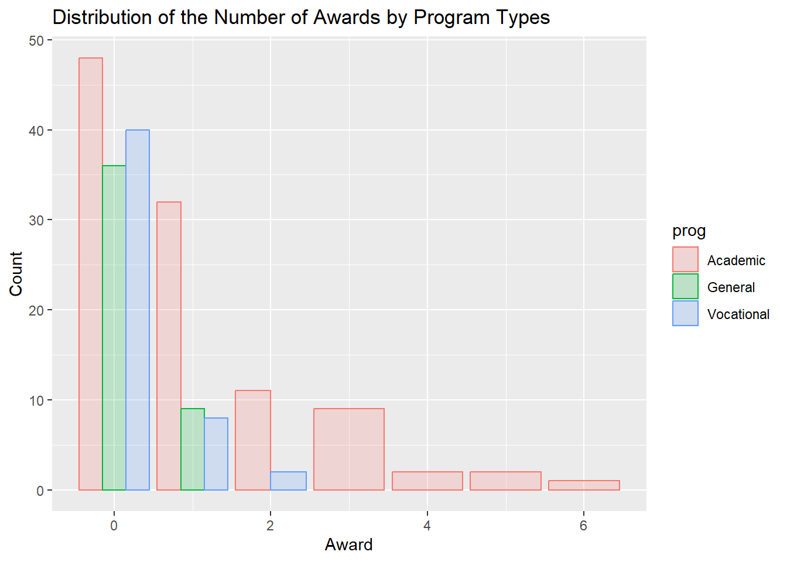
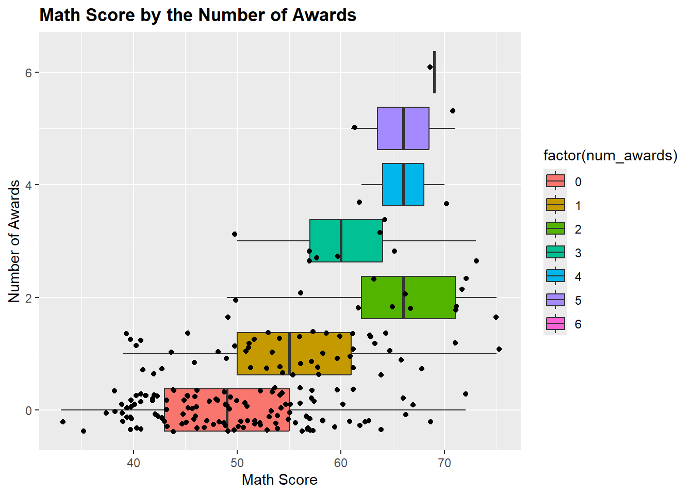
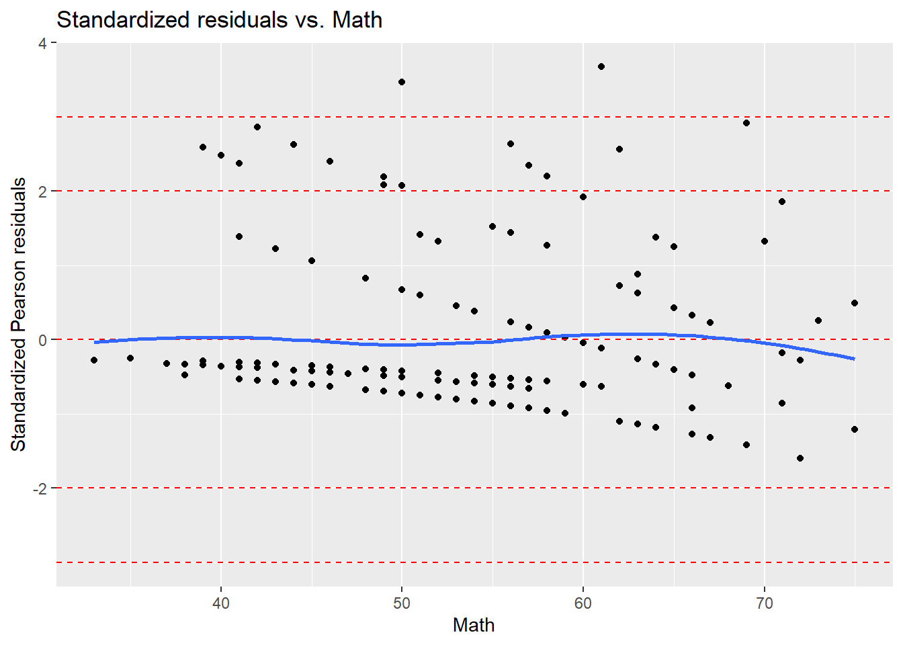
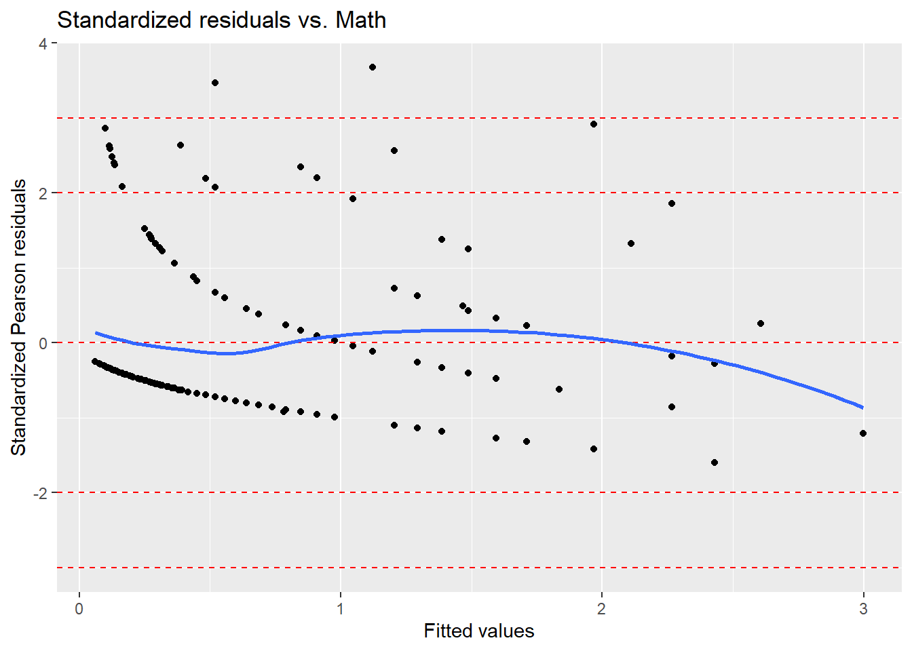
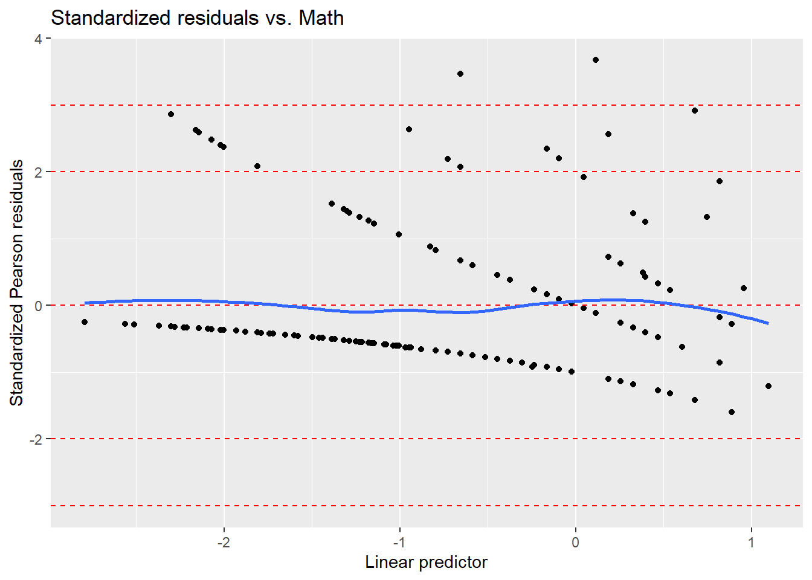

Poisson regression model, estimation, and statistical inference
Model Comparison Criteria, Model Assessment, Goodness of Fit
Looking Ahead
Univariate and multivariate time-series
Notion of dependency and stationarity
Poisson Distribution
Recall that the Poisson distribution models count data i.e. the number of events between 0,1,… for a random variable X. The distribution is:
P(X=k)=\frac{\lambda^ke^{-\lambda}}{k!} One key assumption of the distribution is that E(X)=Var(X)=\lambda, meaning that the mean and variance of the distribution is the same.
As we will see this is a limiting assumption when we do Poisson Regression.
In Poisson regression we model the log of \lambda (the mean assuming a Poisson distribution) as a linear combination of the features:
The log likelihood has no closed form solution, so we estimate the parameters beta using numerical methods just like in logistic regression.
For each y_i we can calculate and predict fitted values using the MLE of the coefficients:
\hat{y_i}=E(y_i|X_i)=\lambda_i=e^{X_i\beta} Under Poisson regression, the Var(\hat{y_i})=\lambda_i=e^{X_i\beta} so that Poisson regression naturally has heteroskedasticity in the results.
Because coefficients are linear on the log scale, when exponentiated they multiply the expected mean outcome. This is similar to the interpretation in logistic regression except we are not dealing with odds ratios but rather changes in the average outcome.
Parameter
Equal Mean and Variance and Overdispersion
This assumption of equal mean and variance is often not met when actually fitting to data, which results in what is known as overdispersion where the variance in the data is larger than the variance fit in the model.
This usually can be remedied by adding more X variables into the model to improve the fit.
Another option is to fit what are known as a quasi poisson model or negative binomial regression model. In both cases, we relax the equal mean and variance assumption by adding an additional parameter to the variance of the response variable, allowing it to be larger than the mean.
In quasi poisson regression we set $
\text{V}[\hat{y_i}]=\theta\lambda_i and in negative binomial regression we set
\text{V}[\hat{y_i}]=\lambda_i+\kappa\lambda_i^2
Case Study: Modeling the Number of Awards
Target
The number of awards earned by students based on the type of programs students were enrolled in using historical admission data.
num_awards: the number of awards earned by students at a high school in a year
math: students’ scores on their final math exam
prog: the type of program in which the students were enrolled
1 = General
2 = Academic
3 = Vocational
EDA
What is the number of observations?
What is the number of variables?
Are there any redundant variables?
Are there any missing information?
Are there any duplicated records?
Are there any values in each of the variables that seem unreasonable?
Modeling the Number of Awards
X
id
num_awards
prog
math
1
45
0
Vocational
41
2
108
0
General
41
3
15
0
Vocational
44
4
67
0
Vocational
42
5
153
0
Vocational
40
6
51
0
General
42
X id num_awards prog math
0 0 0 0 0
Univariate Analysis
Use a frequency table and a bar plot to explore the distribution of the response variable(num_awards). What do you learn?
Modeling the Number of Awards
Number of awards
N
Proportion
0
124
0.62
1
49
0.24
2
13
0.06
3
9
0.04
4
2
0.01
5
2
0.01
6
1
0.00
Warning: The dot-dot notation (`..prop..`) was deprecated in ggplot2 3.4.0.
ℹ Please use `after_stat(prop)` instead.

The prog is the committee’s key explanatory variable of interest. It has three levels: academic, general, and vocational. Use a frequency table and a bar plot to examine its distribution. What do you discover?
Modeling the Number of Awards
Type of program
N
Proportion
Academic
105
0.52
General
45
0.22
Vocational
50
0.25

Plot the distribution of math scores. What are the range and average math scores?

Bivariate Analysis
Examine the associations between the number of awards and program and math scores.
The graph below shows the distribution of the number of awards by program types. How are awards distributed among different programs?

The graph below shows the distribution of the number of awards and students’ math scores. Is there any clear relationship between them?

Use summary_factorlist() function from the finalfit package to tabulate data. What do you learn from the EDA?
Modeling the Number of Awards
Dependent: num_awards
unit
value
prog
Academic
Mean (sd)
1.0 (1.3)
General
Mean (sd)
0.2 (0.4)
Vocational
Mean (sd)
0.2 (0.5)
math
[33.0,75.0]
Mean (sd)
0.6 (1.1)
Model Development
Given the specification of a poisson regression model below,
\log(mean\_num\_awards) = \beta_0 + \beta_1 prog + \beta_2 math + u
Estimate and interpret the model results using glm() and the correct family parameter:
Coefficients
poisson.mod.1<- poisson.mod.1<-glm(num_awards ~ prog + math, data = df, family = poisson)summary(poisson.mod.1)
Call:
glm(formula = num_awards ~ prog + math, family = poisson, data = df)
Deviance Residuals:
Min 1Q Median 3Q Max
-2.2043 -0.8436 -0.5106 0.2558 2.6796
Coefficients:
Estimate Std. Error z value Pr(>|z|)
(Intercept) -4.16327 0.66288 -6.281 3.37e-10 ***
progGeneral -1.08386 0.35825 -3.025 0.00248 **
progVocational -0.71405 0.32001 -2.231 0.02566 *
math 0.07015 0.01060 6.619 3.63e-11 ***
---
Signif. codes: 0 '***' 0.001 '**' 0.01 '*' 0.05 '.' 0.1 ' ' 1
(Dispersion parameter for poisson family taken to be 1)
Null deviance: 287.67 on 199 degrees of freedom
Residual deviance: 189.45 on 196 degrees of freedom
AIC: 373.5
Number of Fisher Scoring iterations: 6
The negative coefficients of the general and vocational programs indicate that the number of wards is lower in these two programs.
The positive coefficients of math score indicates that the number of awards is increasing as the math score increases.
(exp(coef(poisson.mod.1)) -1) *100
(Intercept) progGeneral progVocational math
-98.444332 -66.171250 -51.034289 7.267164
To have a more convenient way to interpret these coefficients, we compute and use percentage changes - Holding program type constant, 1 unit increase in math score increase the mean number of awards by 7%.
Hold math score constant;
a student in the general program, on average, receives 66% fewer awards than students in the academic program
a student in the vocational program, on average, receives 51% fewer awards than students in the academic program
Anova()
Test the overall effect of prog using Anova():
Analysis of Deviance Table (Type II tests)
Response: num_awards
LR Chisq Df Pr(>Chisq)
prog 14.572 2 0.0006852 ***
math 45.010 1 1.96e-11 ***
---
Signif. codes: 0 '***' 0.001 '**' 0.01 '*' 0.05 '.' 0.1 ' ' 1
Based on the p-values, the prog, taken together, is a statistically significant predictor of the number of awards.
Plot the result
Plot the fitted values across the three programs and discuss how the number of awards is associated with math scores.
Warning: Using `size` aesthetic for lines was deprecated in ggplot2 3.4.0.
ℹ Please use `linewidth` instead.
This graph indicates that the most awards are earned by students in the academic program, especially if the student has a high math score.
Students in the general program earn the lowest number of awards
CI of cofficients
Construct and interpret the confidence intervals for each variable using confint().
Waiting for profiling to be done...
beta interval
2.5 %
97.5 %
(Intercept)
-5.4857279
-2.8857230
progGeneral
-1.8558691
-0.4350439
progVocational
-1.3905775
-0.1261624
math
0.0494967
0.0910770
beta interval
2.5 %
97.5 %
(Intercept)
-99.585448
-94.418558
progGeneral
-84.368296
-35.276377
progVocational
-75.106849
-11.852828
math
5.074217
9.535332
at \alpha = 0.05, Compared to the students in academic program, the mean number of awards that students in General program decreases by 35% to 84% holding the math score constant.
With 95% confidence, the mean number of awards decrease by 11% to 75% for the student in vocational program vs. student in academic programs, holding the math score constant.
95% confidence interval of a the effect of 1-unit increase in math score on the mean number of award holding everything else constant is 5.07% to 9.53% increase
Model Comparison Criteria
Recall that the general form of most information criteria is:
Compute these three information criteria for the following three models and then rank the models based on each criterion using AIC(), BIC(), and AICc().
\text{mod.1: }\log(mean\_num\_awards) = \beta_0 + \beta_1 prog + u \text{mod.2: }\log(mean\_num\_awards) = \beta_0 + \beta_1 math + u
\text{mod.3: }\log(mean\_num\_awards) = \beta_0 + \beta_1 prog + \beta_2 math + u
mod.1 mod.2 mod.3
1 384.0762 416.5149 373.5045
mod.1 mod.2 mod.3
1 384.1371 416.6373 373.7096
mod.1 mod.2 mod.3
1 390.6728 426.4098 386.6978
The model with the lowest AIC, corrected AIC, or BIC score is preferred.
The absolute values of these scores do not matter.
These scores can be negative or positive.
Based on all these three criteria, the third model with both math and program is the best, and the second model with the only program is the worst model
Model Assessment
Recall that the Pearson residuals correct for unequal variance in the raw residuals by dividing by the standard deviation:
Standardized Pearson residuals also correct for overestimates of the standard deviation of y_m - \widehat{y_m}:
r_m = \frac{y_m - \widehat{y_m}}{\sqrt{\widehat{\text{V}(Y_m-\hat{Y_m})}}}=\frac{y_m - \widehat{y_m}}{\sqrt{\widehat{\text{V}(Y_m)}-(1-h_m)}} where h_m is the mth diagonal element of the hat matrix.
For the first Poisson model using prog and math as predictors, plot the standardized Pearson residuals against explanatory variables, fitted values, and the linear predictor to assess whether the model assumptions are satisfied.



We have four assumptions general assumptions for Poisson regression
IID data.
The distribution of the response is the one specified by the model, which here is Poisson.
The mean of the distribution is linked to the explanatory variables by the link function that we specify. In Poisson is is log().
The link relates to the explanatory variables in a linear fashion. Here linearity means using a linear combination of the regression parameters.
For iid data, we must discuss how the data is generated and look for possible clustering.
Here there could be some clustering among the students who are in the same program or same classroom, or same cohort, which would violate independence.
The plot of the standardized residuals against math shows roughly the same variance throughout the math score range.
There is no severe curvature in the plot, suggesting we don’t need a transformation or additional polynomial terms.
Similarly, the plots of residuals against the fitted values and linear predictor have roughly constant variance.
They show no evident curvature, so we can conclude that the link function fits well here.
We can also use these plots to check for extreme residuals. In this case, there are numerous residuals whose magnitudes are larger than 2 or 3, scattered across the range of math scores.
This may be a sign of overdispersion, meaning more variability in the counts than the model estimated.
This is an indication that there may be important explanatory variables missing from the model
Goodness of Fit
H_0: \text{Our Model is correct} - The Pearson Statistic \chi^2 and Residual Deviance D are often used to test the goodness of fit, where the null hypothesis is that our model is correct. Under asymptotic theory, both of these follow a chi-squared distribution with the same degrees of freedom as the residuals from the Poisson model.
We can also use these to test for overdispersion in our model since if our model is a good fit to the data we should not have overdispersion.
Goodness-of-fit statistics test is a more objective measure of the overall fit.
The null hypothesis is that the model is correct against the alternative that it is not.
We can use both Pearson statistic or the residual deviance to perform this test
Here, the two non significant p-values indicate that we fail to reject the null hypothesis that the model is correct
Directly Testing for Over Dispersion
We can use a dispersion test for Poisson regression from the AER package that tests the null hypothesis that
\theta=1
vs. not in a regression of the form
\text{V}(Y_i)=(1+\alpha)*\lambda_i
Note that if we set (1+\alpha)=\theta we get the variance form for a quasipoisson above.
So this test is examining whether the variance of our outcome variable appears to come from a Poisson or quasipoisson distribution.
If we reject the null hypothesis due to a small p-value, we have overdispersion if \alpha>0 and underdispersion (smaller variance in reality which is less common) if \alpha<0.
The test itself reports the estimated dispersion value along with a p-value.
Run the test using dispersiontest():
# replace with your codedispersiontest(poisson.mod.1)
Overdispersion test
data: poisson.mod.1
z = 0.53224, p-value = 0.2973
alternative hypothesis: true dispersion is greater than 1
sample estimates:
dispersion
1.047254
Note the dispersion estimate above 1 but lack of significant p-value since it is larger than 0.05.
This means we fail to reject the H_0 that poission regression is value.
If we reject the H_0 in an overdispersion test, that means we should fit a quasipoisson or negative binomial regression.
We can fit quasipoisson directly using glm() and specifying the appropriate family.
For a negative binomial using regression, we need to use glm.nb() from the MASS package.